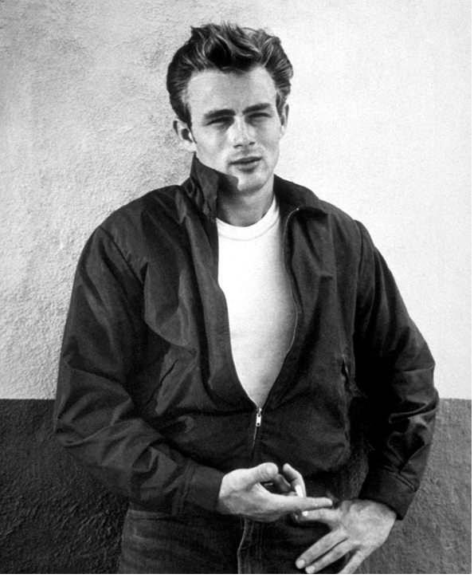

Se parecen arboles pero NO LO SON. Parecen ser una forma de vida entre arbol, hongo y humanoide.
Antes se contenian en los monumentos ahora esas cosas se ocultan en los monumentos.

Es asi como se ven, como arboles secos y producen "musica".

No solo existen esos "arboles", tambien existe este cangrejo.

Este actor supuestamente habia muerto en los 50 pero en los 60 sigue vivo y se convirtio en presidente de los Estados Unidos.
